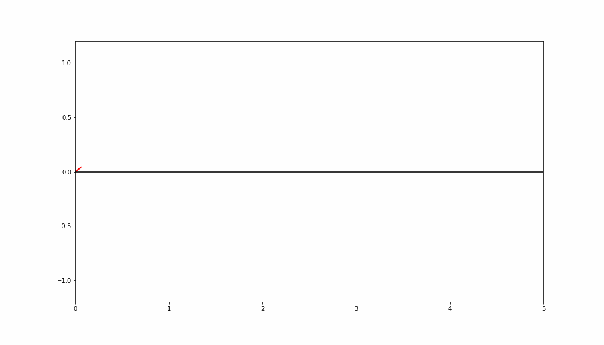

This was the project that introduced me to technical art, through procedural animation.
I began this project by reverse engineering stylized spiderman web animations (literally reverse-engineer, frame by frame trying to make sense of the chaotic movement).
I outlined 4 steps to this project and successfully completed the first step (the thwip of the animation).
Creating a good-looking algorithm to describe this first animation took around a month, after which my winter break concluded and I had no spare time to continue.
I continue to keep this as a portfolio piece, which should becomes obvious after reading the breakdown below. But now recently graduated, I look forward to the chance of seeing this through to completion after gaining quite a bit of 3D skills.
The motivation for this project were to create SP//dr from "Spider-Man: Into the Spider-Verse".
Thus, this project was initially a subproject, in that creating the spiderweb flinging was 1 of many character verbs for a full game.
Maybe one day we'll get there, but probably not soon.
From the top of my technical notes on this project:
"Can you rewire a mainframe while being shot at?" (Peni Parker, Spider-Man Into the Spider-Verse)
Breakdown/ Technical Walkthrough
The following breakdown has been transcribed from my own technical notes and workbook.
I hope that it may serve anyone interested in procedural animation or stylizing physics.
I'm happy to answer any questions regarding the following process, so please feel free to reach out.
Animation Breakdown
First, lets identify what were animating. This will help illustrate the general animation structure and "keyframes".
References
Here I found 4 "keyframes" for 4 modes of animation. Note that, since this is a procedural animation, we aren't
actually keyframing poses - rather we keyframe state to represent how the animation should behave.
Those "keyframes" states are:
Web shooting (THWIP)
Web Backlash (THWAP)
Followtrhough (WHOOSH)
Release (ZIPP)
For now we'll focus on the first state, shooting the web.
In the second reference image, there is a delay between firing the web and it connecting with some target geometry.
But why would we want this in a GAME? Usually, UX (user experience) depends on quick reaction to input - and this may feel
counter-intuitive for game feel. And this is exactly the route insomniac games has done, they do not worry about the web flying
before usability.
Well, the web animation here is the reaction to user input - it actually tacks on a value to the character verb. Rather than quickly
being able to change direction at a moments notice, there is now a time delay which make the feature more expensive to use and garner
a bit more strategy in its use. This also provides a 'real' feel, that allow the feature to seem tangible and accurate.
Nonetheless, if executed well then short distances will be near instanteous anyway, but allow for a effect on the thwap effect for a
nice camera shake.
Simple Physics
Gravity is a key factor in the tension force which drives the actual momentum - thus we would also want to consider it in the basic
trajectory of our web shooting. This is a relatively trivial calculation where we apply a configurable but constant downward acceleration
on the webs path.
Important Note: For the best UX, we must ensure that the web hits where the user desires or indicates.
They shouldn't have to aim higher to approximate the web hitting where they want, that would put to much variablity on the player and decrease
the overall fun factor.
Thus we constrain the path to the smallest elevation/ altitude angle where the arc passes both through the origin and target points. This can be
done using the quadratic equation with some trig maths.
Custom Noise
Next, we want to overlay some noise over the trajectory path to represent wind/ the chaotic element of our web-shooting animation.
Many forms of noise algorithms exist [perlin, simplex, voronoi, etc.]. Typically, you'll find noise with detail parameters representing how many
octaves of a fBM (fractal brownian motion) to use which make the noise rougher. We do not want rough noise, rather it should be very smooth.
At the time, I did not know much about noise and disregarded existing functions rather quickly because of their fBM representations.
But lets consider the smoothest 1D perlin noise we can find on google:
This may seem like a good candidate for wind, but if we were to draw it out quickly we would find this is simply too random.
The transition between x=10.5 and x=11.5 would appear abrupt.
Rather than natural wind, it would look like a snake intentionally slithering past a rock.
We would also want the noise to only have a few hills [1-3], otherwise there is no uniforminity in the wind- it'd just be chaotic turbulence everywhere.
Finally, we want the noise to start and end at 0 and have a range of [-1,1]. The start and end at 0 is so that the trajectory passes
through the origin and target points accurately.
There are plenty of ways to handle this, the most popular would be multipling some curve which can dampen the height of the noise.
Or you could take the end point and bring it up to the start point (change the slope), which is the method I implemented.
So, at this point I decided to create a custom noise function with this all in mind.
It's important to note this is not continuous or deterministic (thus fails for most applications of noise- in reality its 'smooth randomness').
Though, this is purely because it depends on a random seed- it CAN be deterministic and continuous; though have a complexity of O(n) for n points. Thus it still isn't ideal for graphics (GPU) implementations.
The algorithm is as follows:
Generate n random points along the range [0, 1]
For 3 iterations:
Take the approximate integral by Tapezoidal Euler Summation
Normalize y back to range [-1,1]
Let ry = y at -1
For each point x add x/ry
Result:
What'd we do?
Well we used the fact that integrals smooth out functions to create a smooth curve from a random seed.
Then we normalize and change the slope to correct our range. And bam, perfect smooth randomness!
3D Overlay
The 3D overlay step is fairly easy. First, we refactor the basic physics into a 3D problem. Then apply the noise.
For this implementation, we simply need two "noise paths" generated from the algorithm above. One for horizontal offset, and another for vertical offset.
The height ranged between [-1,1] represents those offsets.
The offsets are then applied perpendicular the the direction the web is travelling at a certain point.
Thus the travel vector is the normal vector of the plane representing our noise offsets.
This part may involve some space transformations from the noise UV local space to world space.
Animation I
Now, the part where the web traveling along the trajectory path changes over time.
This is the hard part which took a month to work out.
So what should this look like ideally?
Well rest assured, there are two forces guiding how points on the web move relative to eachother.
First, its a web and string-like object.
Thus points pull on eachother, moving a string brings the rest of the string with it.
This is basically IK, but overall we want less constrained movement since the web is stretchy.
Second, the web is travelling so fast that different curvatures are going to seperate more over time and stretch out.
Imagine waves on the ocean, stuff travling in one direction continues along that direction and the arc/shaping grows.
You might think that the two above forces conflict with eachother. Yes, they do. This makes a very interesting visual contrast.
Essentially we want a soft IK where stretching is due to changes in the trajectory.
A decent way to visualize these two qualities, is two actually draw the web changing frame by frame for a stylistic effect.
The first property constrains the physics, while the second employs the animation principles 'follow through' and 'exaggeration'.
Soft Inverse Kinematics (Which is basically an Oxymoron)
Let's first attempt to implement the soft IK.
Because the IK may stretch, there is no fixed length between two points.
Now, for anyone familiar with IK- thats kind of the point... you'll have fixed lengths between points and solve reverse kinematics.
So quickly disregard the idea that this is in anyway IK- other than it uses IK approaches in a unique application.
So how do points on the web travel? Simply as they would if we didn't have inverse kinematics at all, they move forward on the trajectory over time.
In this sense, the x (factor along trajectory line) is constrained and predictable.
The only other predicatable measurement is the y (height) of the root point which follows the known trajectory.
How is this similar to IK? Well the setup is nearly the same, we have a set of points and a goal point for the end of the web to hit on the next time frame.
Thus, we can use something similar to the forward-reaching step from the FABRIK (forward and backward reaching IK) alogirthm to solve for every other point.
Since, the web is continuously forming new points, the backward-reaching step is irrelevant.
To be honest, when designing this algorithm I did not use IK algorithms at all (nor did I know about them).
Yet it's a very similar tangent and for anyone dedicated in understanding this breakdown - I suggest using knowledge about that algorithm as a foothold (as I'm using it as a foothold to describe this process which has (seemingly) never been done before).
Where, it does't work is that IK is dependent on the rigid lengths, and creating many points or small timesteps will dilute the movement of the entire body.
Rather, there needs to be a sense of 'center of gravity' in the web.
If we think about it, point x is pulled by the movement of everything in front of it.
If point n is the head point of the web (on the trajectory), then point n-1 will be pulled between where point n was on timestep n and where it will be on timestep n+1.
Thus we draw a magenta line between those two points. This is where point n-1 will be pulled, so we can draw a green line.
Since, the x value is constrained the intersection of x=n and the green line is where the 2nd point will be at timestep n+1.
Now for the next point, we find the middle of the green line which is between where point n-1 was being pulled and where it was.
This is the updated center of pull, and we draw a similar line between point n-2 and this point represented as an orange line.
This process is repeated again, for the next point we find the center of the orange line and draw a new 'pull vector' towards that point.
Thus he have something very similar to the Forward-reaching IK algorithm, just lines are drawn differently and points are constrained differently.
This now acts behaves similarly between different timesteps and variable spacing between points. Note that timesteps and spacing do not have to match,
but do so here for the sake of simplicity.
This alone gives us an animation like:

Velocity Factor
Remember, points on the web want to travel in the direction they are already going.
There are certaintly a few ways to do this, but the general direction is forward (right?).
So let's draw a triangle and use that to project where point's will be on the next timeframe.
Putting it together
Now, we simply blend these two forces together. Just lerp between the two to get a final velocity or y deviation.
Conclusions
And that is how I learned 3D math, vectors, and various animation principles - especially for frame by frame animating opposed from pose to pose animating.
Even now, I love creating webs with this simulation - it doesn't stack up to the visual expertiece of my other projects but may definetly be the most technical.